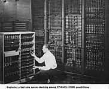
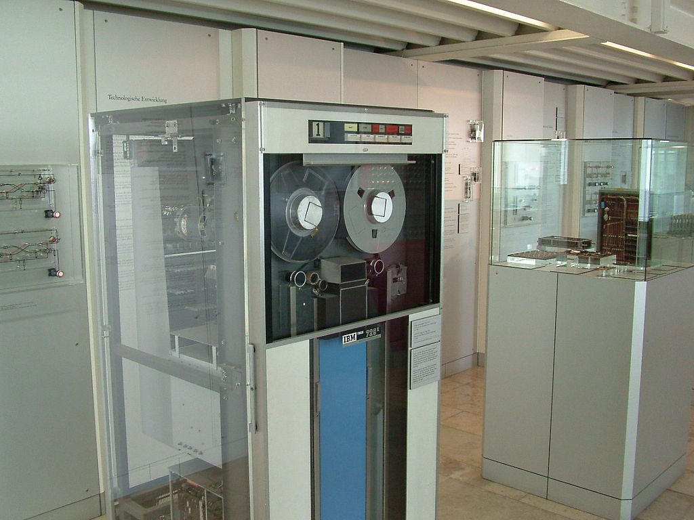

Компью́тер — термин, пришедший в русский язык из иноязычных источников, одно из названий электронной вычислительной машины. Используется в данном смысле в русском литературном языке, научной, научно-популярной литературе

Использование компьютеров для различных целей описывается терминами автоматизированный (например, автоматизированный контроль), машинный (например, машинная графика), вычислительный (например, вычислительная техника).
Слово компьютер является производным от английских слов to compute, computer, которые переводятся как «вычислять», «вычислитель» (английское слово, в свою очередь, происходит от латинского computāre — «вычислять»). Первоначально в английском языке это слово означало человека, производящего арифметические вычисления с привлечением или без привлечения механических устройств. В дальнейшем его значение было перенесено на сами машины, однако современные компьютеры выполняют множество задач, не связанных напрямую с математикой.

Впервые трактовка слова компьютер появилась в 1897 году в Оксфордском словаре английского языка. Его составители тогда понимали компьютер как механическое вычислительное устройство. В 1946 году словарь пополнился дополнениями, позволяющими разделить понятия цифрового, аналогового и электронного компьютера.
Понятие компьютер следует отличать от понятия Электронно-вычислительная машина (ЭВМ); последняя является одним из способов реализации компьютера. ЭВМ подразумевает использование электронных компонентов в качестве её функциональных узлов, однако компьютер может быть устроен и на других принципах — он может быть механическим, биологическим, оптическим, квантовым и т. п., работая за счёт перемещения механических частей, движения электронов, фотонов или эффектов других физических явлений. Кроме того, по типу функционирования вычислительная машина может быть цифровой (ЦВМ) и аналоговой (АВМ). С другой стороны, термин «компьютер» предполагает возможность изменения выполняемой программы (перепрограммирования), что возможно не для всех видов ЭВМ.